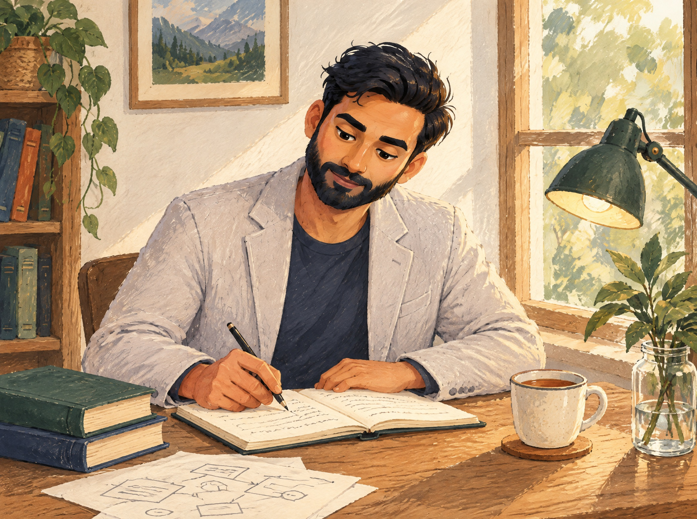

<title>Green tests prove it runs. They don't prove it's right. · Tushar Pathak</title>
<link rel="preconnect" href="https://fonts.googleapis.com">
<link rel="preconnect" href="https://fonts.gstatic.com" crossorigin>
<link rel="stylesheet" href="https://fonts.googleapis.com/css2?family=Fraunces:opsz,wght,SOFT@9..144,400..700,0..100&family=Inter:wght@400;500;600&family=Caveat:wght@400;600&display=swap">
<style>
  /* ---------- tokens (single paper world; painted explicitly) ---------- */
  :root {
    --paper: #F7F1E7;
    --ivory: #FBF7EF;
    --paper-2: #EFE7D8;
    --navy: #0D1735;
    --navy-2: #2E3854;
    --ink-soft: #5A6178;
    --rust: #B64927;
    --terracotta: #92381F;
    --forest: #214F43;
    --green-2: #496D58;
    --steel: #63799E;
    --note: #EEDCA9;
    --kraft: #D7BE93;
    --line: rgba(13, 23, 53, .12);
    --shadow-paper: 0 1px 2px rgba(13,23,53,.08), 0 10px 24px -12px rgba(13,23,53,.22);
    --display: "Fraunces", "Iowan Old Style", Georgia, serif;
    --body: "Inter", system-ui, -apple-system, "Segoe UI", sans-serif;
    --hand: "Caveat", "Segoe Print", "Bradley Hand", cursive;
    --gutter: clamp(16px, 4vw, 56px);
    --max: 1360px;
  }

  * { box-sizing: border-box; }
  body {
    margin: 0;
    background: var(--paper);
    color: var(--navy);
    font-family: var(--body);
    font-size: 16px;
    line-height: 1.6;
    -webkit-font-smoothing: antialiased;
    overflow-x: hidden;
    position: relative;
  }
  /* paper grain: two faint noise layers, very low opacity */
  body::before {
    content: "";
    position: fixed; inset: 0; pointer-events: none; z-index: 0;
    background-image:
      radial-gradient(rgba(13,23,53,.035) .6px, transparent .7px),
      radial-gradient(rgba(146,56,31,.03) .5px, transparent .6px);
    background-size: 7px 7px, 11px 11px;
    background-position: 0 0, 3px 5px;
    opacity: .9;
  }
  a { color: inherit; text-decoration: none; }
  img { max-width: 100%; display: block; }
  h1, h2, h3 { margin: 0; font-family: var(--display); font-weight: 500; line-height: 1.02; letter-spacing: -.015em; text-wrap: balance; }
  p { margin: 0; }
  .hand { font-family: var(--hand); font-weight: 600; line-height: 1.15; }
  .eyebrow { font-size: 12px; font-weight: 600; letter-spacing: .14em; text-transform: uppercase; color: var(--navy-2); }
  .eyebrow .dot { color: var(--rust); margin: 0 .4em; }
  .wrap { max-width: var(--max); margin-inline: auto; padding-inline: var(--gutter); position: relative; z-index: 1; }
  :focus-visible { outline: 2px solid var(--rust); outline-offset: 3px; border-radius: 4px; }
  .sr-only { position: absolute; width: 1px; height: 1px; overflow: hidden; clip: rect(0 0 0 0); white-space: nowrap; }

  /* ---------- header ---------- */
  .header {
    position: sticky; top: env(safe-area-inset-top, 0px); z-index: 20;
    background: color-mix(in srgb, var(--paper) 86%, transparent);
    backdrop-filter: blur(10px); -webkit-backdrop-filter: blur(10px);
    border-bottom: 1px solid transparent;
  }
  .header.scrolled { border-bottom-color: var(--line); }
  .header .wrap { display: grid; grid-template-columns: auto 1fr auto; align-items: center; gap: 24px; padding-block: 14px; }
  .brand { display: flex; align-items: center; gap: 12px; }
  .brand svg { width: 40px; height: 40px; flex: none; }
  .brand .name { font-size: 13px; font-weight: 600; letter-spacing: .12em; text-transform: uppercase; line-height: 1.1; display: block; }
  .brand .sub { font-family: var(--hand); font-size: 17px; font-weight: 400; color: var(--navy-2); line-height: 1; margin-top: 2px; display: block; }
  .nav { display: flex; justify-content: center; gap: clamp(18px, 3vw, 36px); font-family: var(--display); font-size: 18px; font-weight: 500; }
  .nav a { position: relative; padding-block: 4px; }
  .nav a[aria-current="page"]::after, .nav a:hover::after {
    content: ""; position: absolute; left: -2px; right: -2px; bottom: -2px; height: 6px;
    background: url("data:image/svg+xml;utf8,<svg xmlns='http://www.w3.org/2000/svg' viewBox='0 0 60 6' preserveAspectRatio='none'><path d='M1 4 C 12 1, 22 5, 32 3 S 50 1, 59 3' fill='none' stroke='%230D1735' stroke-width='2' stroke-linecap='round'/></svg>") center/100% 100% no-repeat;
  }
  .nav a:hover::after { opacity: .45; }
  .nav a[aria-current="page"]:hover::after { opacity: 1; }
  .pill {
    display: inline-flex; align-items: center; gap: 8px; padding: 10px 20px; border-radius: 999px;
    background: var(--navy); color: var(--ivory); font-family: var(--hand); font-size: 20px; font-weight: 600; line-height: 1;
    box-shadow: 0 6px 14px -8px rgba(13,23,53,.5);
    transition: transform .18s ease;
  }
  .pill:hover { transform: translateY(-1px); }
  .menu-btn { display: none; }

  /* ---------- shared paper objects (from home.html) ---------- */
  .btn { display: inline-flex; align-items: center; gap: 10px; padding: 12px 22px; border-radius: 999px; font-family: var(--hand); font-size: 22px; font-weight: 600; line-height: 1; transition: transform .18s ease, box-shadow .18s ease; }
  .btn-primary { background: var(--rust); color: var(--ivory); box-shadow: 0 8px 18px -10px rgba(146,56,31,.7); }
  .btn-primary:hover { transform: translateY(-1px); box-shadow: 0 12px 22px -10px rgba(146,56,31,.8); }
  .btn-secondary { background: var(--ivory); color: var(--navy); border: 1.5px solid var(--line); font-family: var(--body); font-size: 15px; font-weight: 500; }
  .btn-secondary:hover { border-color: var(--navy-2); }
  .btn-secondary svg { width: 16px; height: 16px; }

  .torn { position: relative; }
  .torn-top { display: block; width: 100%; height: 44px; margin-bottom: -1px; }
  .torn-top path { fill: var(--paper-2); }

  .tape { position: absolute; width: 96px; height: 26px; top: -12px; left: 50%; transform: translateX(-50%) rotate(-3deg);
    background: rgba(215,190,147,.55); border: 1px solid rgba(146,56,31,.08);
    box-shadow: 0 1px 1px rgba(13,23,53,.05) inset; }
  .tape.l { left: 34px; transform: rotate(-9deg); }
  .tape.r { left: auto; right: 24px; transform: rotate(7deg); }
  .sticky {
    position: absolute; padding: 14px 16px; width: 168px; background: var(--note); color: var(--navy);
    font-family: var(--hand); font-size: 19px; line-height: 1.2; box-shadow: 0 8px 14px -8px rgba(13,23,53,.35); transform: rotate(4deg);
  }
  .sticky.bl { left: -28px; bottom: -22px; transform: rotate(-5deg); width: 156px; }
  .sticky.tr { right: -22px; top: 18px; background: var(--kraft); }

  .footer .wrap { border-top: 1px solid var(--line); padding-block: 22px 36px; display: flex; flex-wrap: wrap; gap: 10px 24px; justify-content: space-between; font-size: 13px; color: var(--ink-soft); }
  .footer .hand { font-size: 18px; color: var(--navy-2); font-weight: 400; }

  /* ================= page: /thinking/[slug] ================= */

  .essay { position: relative; z-index: 1; }
  .essay .wrap { padding-block: clamp(24px, 3vw, 40px) clamp(64px, 7vw, 100px); }
  /* reading column (≤ 68ch) + a margin column for pinned things */
  .article { display: grid; grid-template-columns: minmax(0, 68ch) minmax(220px, 1fr); column-gap: clamp(32px, 5vw, 80px); align-items: start; }
  .article > * { grid-column: 1; min-width: 0; }
  .crumb { grid-row: 1; }
  .essay-head { grid-row: 2; }
  .prose { grid-row: 3; }
  .pager { grid-row: 4; }
  .margin { grid-column: 2; grid-row: 1 / 5; position: relative; }

  .crumb { font-family: var(--hand); font-size: 20px; font-weight: 400; color: var(--ink-soft); margin-bottom: 26px; display: inline-block; }
  .crumb:hover { color: var(--rust); }

  .essay-head { display: grid; gap: 18px; margin-bottom: clamp(28px, 4vw, 44px); }
  .essay-head h1 { font-size: clamp(40px, 4.6vw, 62px); font-variation-settings: "opsz" 144, "SOFT" 30; }
  .essay-head .dek { font-size: 19px; line-height: 1.5; color: var(--navy-2); max-width: 52ch; }
  .essay-head .meta { display: flex; flex-wrap: wrap; align-items: center; gap: 8px 18px; font-size: 14px; color: var(--ink-soft); padding-top: 14px; border-top: 1px dashed var(--line); }
  .essay-head .meta .rel { color: var(--navy); font-weight: 500; border-bottom: 1px solid var(--line); }
  .essay-head .meta .rel:hover { color: var(--rust); border-color: var(--rust); }
  .essay-head .meta .draft { font-family: var(--hand); font-size: 18px; font-weight: 600; color: var(--rust); transform: rotate(-4deg); display: inline-block; padding: 0 6px; border: 1.5px solid rgba(182,73,39,.5); border-radius: 3px; line-height: 1.1; }

  .prose { display: grid; gap: 26px; font-size: 17px; line-height: 1.7; color: var(--navy); }
  .prose p { max-width: 68ch; }

  /* handwritten pull-quotes — the sourced passages */
  .pull { position: relative; margin: 8px 0 4px; padding: 10px 0 10px 26px; border-left: 3px solid var(--rust); }
  .pull p { font-family: var(--hand); font-weight: 400; font-size: clamp(24px, 2.2vw, 30px); line-height: 1.22; color: var(--navy); max-width: 30ch; text-wrap: pretty; }
  .pull cite { display: block; font-style: normal; font-family: var(--body); font-size: 13px; color: var(--ink-soft); margin-top: 12px; }
  .pull cite b { font-weight: 600; color: var(--navy-2); }
  .pull.second { border-left-color: var(--forest); }

  /* framing paragraph with the handwritten margin note beside it */
  .framing { position: relative; }
  .framing p { color: var(--navy-2); }
  .margin-note { position: absolute; left: calc(100% + clamp(24px, 3vw, 48px)); top: -6px; width: 200px; font-family: var(--hand); font-size: 22px; font-weight: 600; line-height: 1.1; color: var(--rust); transform: rotate(-2.5deg); }
  .margin-note svg { display: block; width: 74px; height: 42px; margin-top: 2px; margin-left: -12px; }
  .margin-note path { stroke: var(--rust); stroke-width: 1.6; fill: none; stroke-dasharray: 5 6; stroke-linecap: round; }
  .margin-note .head { stroke-dasharray: none; }

  .related { margin-top: 10px; font-family: var(--hand); font-size: 24px; font-weight: 600; color: var(--rust); justify-self: start; }
  .related:hover { color: var(--terracotta); }

  /* pinned marginal photograph */
  .pinned { position: relative; width: min(100%, 300px); background: var(--ivory); padding: 12px 12px 40px; box-shadow: var(--shadow-paper); transform: rotate(-2.4deg); margin: 72px 0 0; }
  .pinned .pin { position: absolute; top: -9px; left: 50%; width: 16px; height: 16px; border-radius: 50%; transform: translateX(-50%);
    background: radial-gradient(circle at 35% 35%, rgba(255,255,255,.3) 0, transparent 40%), var(--rust); box-shadow: 0 2px 3px rgba(13,23,53,.35); z-index: 1; }
  .pinned .frame { aspect-ratio: 5 / 4; overflow: hidden; border-radius: 2px; }
  .pinned img { width: 100%; height: 100%; object-fit: cover; object-position: 38% 45%; }
  .pinned .caption { position: absolute; left: 14px; right: 14px; bottom: 10px; font-family: var(--hand); font-size: 18px; font-weight: 400; color: var(--ink-soft); }
  .margin .sticky.aside { position: relative; left: 32px; top: auto; margin-top: 44px; width: 176px; transform: rotate(3deg); background: var(--kraft); }

  /* prev / next */
  .pager { margin-top: clamp(48px, 6vw, 72px); padding-top: 24px; border-top: 1px solid var(--line); display: grid; grid-template-columns: 1fr 1fr; gap: 20px; }
  .pager a { display: grid; gap: 4px; }
  .pager a:hover h2 { color: var(--rust); }
  .pager .lbl { font-family: var(--hand); font-size: 18px; font-weight: 400; color: var(--ink-soft); }
  .pager h2 { font-size: clamp(20px, 1.8vw, 26px); font-variation-settings: "opsz" 72, "SOFT" 20; line-height: 1.15; transition: color .18s ease; }
  .pager .next { text-align: right; justify-items: end; }

  /* ---------- responsive ---------- */
  @media (max-width: 1100px) {
    .margin-note { position: static; width: auto; transform: rotate(-1.5deg); margin-bottom: 8px; }
    .margin-note svg { display: none; }
  }
  @media (max-width: 900px) {
    .nav { display: none; }
    .nav.open { display: flex; position: absolute; left: 0; right: 0; top: 100%; flex-direction: column; align-items: flex-start; gap: 6px; padding: 12px var(--gutter) 18px; background: var(--paper); border-bottom: 1px solid var(--line); box-shadow: 0 16px 28px -20px rgba(13,23,53,.35); }
    .menu-btn { display: inline-grid; place-items: center; width: 42px; height: 42px; border: 1.5px solid var(--line); border-radius: 999px; background: var(--ivory); justify-self: end; cursor: pointer; }
    .header .pill { display: none; }
    .article { grid-template-columns: minmax(0, 68ch); }
    .article > * { grid-row: auto; }
    .margin { grid-column: 1; display: flex; flex-wrap: wrap; align-items: flex-start; gap: 20px 32px; margin: 8px 0 36px; }
    .pinned { margin: 12px 0 0; width: min(100%, 260px); }
    .margin .sticky.aside { left: 0; margin-top: 20px; }
  }
  @media (max-width: 640px) {
    .pull { padding-left: 18px; }
    .pager { grid-template-columns: 1fr; }
    .pager .next { text-align: left; justify-items: start; }
    .pinned { width: min(100%, 240px); }
  }

  @media (prefers-reduced-motion: reduce) {
    .btn, .pill, .pager h2 { transition: none; }
  }
</style>

<header class="header" id="header">
  <div class="wrap">
    <a class="brand" href="home.html" aria-label="Tushar Pathak — home">
      <svg viewBox="0 0 40 40" aria-hidden="true">
        <path d="M6 9 C 14 7, 22 8, 30 7" stroke="#0D1735" stroke-width="2.4" fill="none" stroke-linecap="round"/>
        <path d="M17 8 C 15 16, 13 24, 12 33" stroke="#0D1735" stroke-width="2.4" fill="none" stroke-linecap="round"/>
        <path d="M23 12 C 24 20, 22 27, 21 33" stroke="#0D1735" stroke-width="2.2" fill="none" stroke-linecap="round"/>
        <path d="M23 12 C 30 10, 35 13, 34 18 C 33 23, 27 24, 22 22" stroke="#0D1735" stroke-width="2.2" fill="none" stroke-linecap="round"/>
      </svg>
      <span>
        <span class="name">Tushar Pathak</span>
        <span class="sub">Build · Learn · Solve · Grow</span>
      </span>
    </a>
    <nav class="nav" id="nav" aria-label="Primary">
      <a href="home.html">Home</a>
      <a href="work.html">Work</a>
      <a href="thinking.html" aria-current="page">Thinking</a>
      <a href="about.html">About</a>
      <a href="playground.html">Playground</a>
    </nav>
    <a class="pill" href="contact.html">Let’s connect <span aria-hidden="true">→</span></a>
    <button class="menu-btn" type="button" aria-label="Open menu" aria-expanded="false" aria-controls="nav" id="menu-btn">
      <svg width="18" height="14" viewBox="0 0 18 14" aria-hidden="true"><path d="M1 2 C 6 1, 12 3, 17 2 M1 7 C 6 6, 12 8, 17 7 M1 12 C 6 11, 12 13, 17 12" stroke="#0D1735" stroke-width="1.8" fill="none" stroke-linecap="round"/></svg>
    </button>
  </div>
</header>

<main>
  <section class="essay" aria-labelledby="essay-h">
    <div class="wrap">
      <article class="article">
        <a class="crumb" href="thinking.html">← Thinking</a>

        <header class="essay-head">
          <p class="eyebrow">Essay<span class="dot">·</span>01</p>
          <h1 id="essay-h">Green tests prove it runs. They don't prove it's right.</h1>
          <p class="dek">A note on why a fully green test suite still missed the defects that mattered.</p>
          <p class="meta"><span>2 min read</span><a class="rel" href="case-study.html">Related project: TeachSpark →</a><span class="draft">draft</span></p>
        </header>

        <aside class="margin" aria-label="Pinned to the margin">
          <figure class="pinned">
            <span class="pin" aria-hidden="true"></span>
            <div class="frame">
              
            </div>
            <figcaption class="caption">written by hand first, then typed</figcaption>
          </figure>
          <p class="sticky aside">the tests all passed. that was the problem.</p>
        </aside>

        <div class="prose">
          <blockquote class="pull">
            <p>“364 tests passed. Then I opened the actual file… Green tests prove it runs. They don't prove it's right.”</p>
            <cite><b>Source:</b> TeachSpark — 9-Day Build Series (LinkedIn draft)</cite>
          </blockquote>

          <blockquote class="pull second">
            <p>“The two most important defects this session… were both found by reading the code/reasoning, not by any test.”</p>
            <cite><b>Source:</b> Cubicle — lesson-learnt.md</cite>
          </blockquote>

          <!-- The live component prefixes "Draft — pending sign-off: " and the data string begins with it too,
               so the phrase renders twice on the real site. Here it is rendered once, as the margin note. -->
          <div class="framing">
            <p class="margin-note" aria-hidden="true">Draft — pending sign-off:<svg viewBox="0 0 74 42" aria-hidden="true"><path d="M60 4 C 50 14, 30 22, 8 30"/><path class="head" d="M17 24 L 8 30 L 18 35"/></svg></p>
            <p><span class="sr-only">Draft — pending sign-off: </span>this is a placeholder note, not the finished essay. It connects two separate build sessions — TeachSpark and Cubicle — around one recurring observation: a fully green test suite still let through the defects that turned out to matter most, and those were only caught by reading the code and the reasoning directly, not by any test passing or failing. The full essay, worked examples, and conclusion are not yet written.</p>
          </div>

          <a class="related" href="case-study.html">Related project: TeachSpark →</a>
        </div>

        <nav class="pager" aria-label="Essay navigation">
          <a class="prev" href="thinking.html">
            <span class="lbl">← all notes</span>
            <h2>Thinking</h2>
          </a>
          <a class="next" href="thinking.html">
            <span class="lbl">next note →</span>
            <h2>I made my own numbers worse the day before submitting</h2>
          </a>
        </nav>
      </article>
    </div>
  </section>
</main>

<footer class="band" aria-labelledby="band-h">
<style>
  .band { position: relative; z-index: 1; margin-top: clamp(48px, 6vw, 88px); color: var(--ivory); }
  .band .band-torn { display: block; width: 100%; height: 46px; margin-bottom: -1px; }
  .band .band-torn path { fill: var(--terracotta); }
  .band .band-body { background: var(--terracotta);
    background-image: repeating-linear-gradient(-45deg, rgba(251,247,239,.055) 0 1.5px, transparent 1.5px 13px); }
  .band .wrap { padding-block: clamp(36px, 5vw, 64px) 0; }
  .band .eyebrow { color: rgba(251,247,239,.7); }
  .band h2 { font-size: clamp(40px, 5vw, 72px); font-variation-settings: "opsz" 144, "SOFT" 30; margin-top: 12px; color: var(--ivory); max-width: 28ch; }
  .band h2 em { font-style: italic; color: var(--note); font-variation-settings: "opsz" 144, "SOFT" 60; }
  .band h2 .dim { color: rgba(13,23,53,.78); }
  .band .hire { margin-top: 18px; font-size: 18px; color: rgba(251,247,239,.85); max-width: 46ch; }
  .band .row { display: flex; flex-wrap: wrap; justify-content: space-between; align-items: end; gap: 28px 40px; margin-top: clamp(28px, 4vw, 48px); }
  .band .label { display: block; font-size: 13px; color: rgba(251,247,239,.65); margin-bottom: 6px; }
  .band .email { font-size: clamp(18px, 2vw, 22px); color: var(--ivory); border-bottom: 1.5px solid rgba(251,247,239,.35); padding-bottom: 2px; word-break: break-all; }
  .band .email:hover { border-color: var(--note); }
  .band .social { display: flex; gap: 14px; }
  .band .social a { width: 56px; height: 56px; border-radius: 50%; background: var(--ivory); color: var(--terracotta); display: grid; place-items: center; transition: transform .18s ease; }
  .band .social a:hover { transform: translateY(-2px); }
  .band .social svg { width: 22px; height: 22px; fill: currentColor; }
  .band .social .in { font-family: var(--body); font-weight: 700; font-size: 19px; letter-spacing: -.03em; }
  .band .bar { display: flex; flex-wrap: wrap; justify-content: space-between; gap: 8px 24px; margin-top: clamp(32px, 4vw, 48px); padding-block: 18px 30px; border-top: 1px solid rgba(251,247,239,.28); font-size: 12px; letter-spacing: .08em; color: rgba(251,247,239,.78); }
  .band .bar .hand { font-size: 17px; letter-spacing: 0; font-weight: 400; color: var(--note); }
  @media (prefers-reduced-motion: reduce) { .band .social a { transition: none; } }
</style>
  <svg class="band-torn" viewBox="0 0 1440 46" preserveAspectRatio="none" aria-hidden="true">
    <path d="M0 30 L 24 18 L 48 32 L 70 14 L 96 28 L 120 22 L 140 34 L 168 12 L 192 26 L 214 20 L 240 30 L 262 16 L 288 28 L 312 24 L 336 34 L 358 14 L 384 26 L 408 20 L 430 32 L 456 16 L 480 28 L 504 22 L 528 34 L 552 18 L 576 26 L 600 12 L 624 30 L 648 22 L 672 32 L 696 16 L 720 28 L 744 20 L 768 34 L 792 14 L 816 26 L 840 22 L 864 32 L 888 18 L 912 28 L 936 12 L 960 30 L 984 22 L 1008 34 L 1032 16 L 1056 26 L 1080 20 L 1104 32 L 1128 14 L 1152 28 L 1176 22 L 1200 34 L 1224 18 L 1248 26 L 1272 12 L 1296 30 L 1320 20 L 1344 32 L 1368 16 L 1392 28 L 1416 22 L 1440 30 L 1440 46 L 0 46 Z"/>
  </svg>
  <div class="band-body">
    <div class="wrap">
      <p class="eyebrow">Let’s connect</p>
      <h2 id="band-h">Let’s <em>build</em><br><span class="dim">something people can use.</span></h2>
      <p class="hire">Hiring for PM, AI PM or AI-builder roles? Say hi.</p>
      <div class="row">
        <div><span class="label">Email</span><a class="email" href="contact.html">Tushar_Pathak@outlook.com</a></div>
        <div><span class="label">Social</span>
          <div class="social">
            <a href="https://www.linkedin.com/in/pathaktushar" aria-label="LinkedIn"><span class="in" aria-hidden="true">in</span></a>
            <a href="https://github.com/007U5H4R" aria-label="GitHub"><svg viewBox="0 0 16 16" aria-hidden="true"><path d="M8 0C3.58 0 0 3.58 0 8c0 3.54 2.29 6.53 5.47 7.59.4.07.55-.17.55-.38 0-.19-.01-.82-.01-1.49-2.01.37-2.53-.49-2.69-.94-.09-.23-.48-.94-.82-1.13-.28-.15-.68-.52-.01-.53.63-.01 1.08.58 1.23.82.72 1.21 1.87.87 2.33.66.07-.52.28-.87.51-1.07-1.78-.2-3.64-.89-3.64-3.95 0-.87.31-1.59.82-2.15-.08-.2-.36-1.02.08-2.12 0 0 .67-.21 2.2.82.64-.18 1.32-.27 2-.27.68 0 1.36.09 2 .27 1.53-1.04 2.2-.82 2.2-.82.44 1.1.16 1.92.08 2.12.51.56.82 1.27.82 2.15 0 3.07-1.87 3.75-3.65 3.95.29.25.54.73.54 1.48 0 1.07-.01 1.93-.01 2.2 0 .21.15.46.55.38A8.01 8.01 0 0 0 16 8c0-4.42-3.58-8-8-8z"/></svg></a>
            <a href="contact.html#resume" aria-label="Resume — updating" title="Sanitised resume coming — email me for a copy"><svg viewBox="0 0 24 24" aria-hidden="true"><path d="M6 2h8l6 6v14H6V2zm7 1.5V9h5.5L13 3.5zM8 12h8v1.6H8V12zm0 3.4h8V17H8v-1.6zm0 3.4h5.5v1.6H8v-1.6z"/></svg></a>
          </div>
        </div>
      </div>
      <div class="bar">
        <span>© 2026 Tushar Pathak. Built with curiosity, chai &amp; Claude Code.</span>
        <span class="hand">Observing what others overlook.</span>
        <span>Bengaluru, India</span>
      </div>
    </div>
  </div>
</footer>

<script>
  (function () {
    var header = document.getElementById('header');
    function onScroll() { header.classList.toggle('scrolled', window.scrollY > 8); }
    window.addEventListener('scroll', onScroll, { passive: true }); onScroll();

    var nav = document.getElementById('nav'), menuBtn = document.getElementById('menu-btn');
    menuBtn.addEventListener('click', function () {
      var open = nav.classList.toggle('open');
      menuBtn.setAttribute('aria-expanded', open ? 'true' : 'false');
    });
    nav.addEventListener('click', function (e) { if (e.target.tagName === 'A') { nav.classList.remove('open'); menuBtn.setAttribute('aria-expanded', 'false'); } });
  })();
</script>
